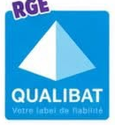

Fenêtres
PVC, aluminium ou mixte bois-alu. Isolation thermique et phonique renforcée, dimensions relevées chez vous.
En savoir plusMenuiserie à Nemours (77)
Des menuiseries fabriquées en France, posées par notre équipe certifiée RGE. Un seul interlocuteur du premier appel à la fin du chantier, et un chantier laissé propre.



Nos prestations
Chaque ouverture est mesurée sur place. Nous ne vendons pas de modèle standard, nous adaptons la menuiserie à votre maison.
PVC, aluminium ou mixte bois-alu. Isolation thermique et phonique renforcée, dimensions relevées chez vous.
En savoir plusPortes sécurisées et portes de garage : isolation, robustesse et finitions soignées.
En savoir plusRoulants, battants ou coulissants, manuels ou motorisés, assortis à l'aspect de votre façade.
En savoir plusCoulissantes ou à galandage, pour faire entrer la lumière et agrandir vos pièces à vivre.
En savoir plusPortails battants ou coulissants en aluminium. Installation et entretien, avec des finitions professionnelles.
En savoir plusPergolas bio-climatiques, pergolas et stores pour profiter de votre terrasse plus longtemps.
En savoir plus

Réalisations
Faites glisser pour comparer. Plus de lumière, plus de confort, un résultat moderne et performant, avec des finitions professionnelles.
Qui nous sommes
Avant de créer Eco Fenêtre, nous avons posé des menuiseries pour de grandes enseignes. Nous y avons appris le métier, et nous avons vu ce que coûtent les intermédiaires : un commercial, un sous-traitant, parfois un second.
Aujourd'hui, c'est la même équipe qui vous conseille, prend les mesures et pose. Le devis correspond au travail réel, et vous savez toujours à qui vous adresser.
Avis clients
Des avis déposés par nos clients sur Google, publiés tels quels.
★★★★★Une entreprise comme on les aime ! Professionnels du devis jusqu’à la pose, artisans courtois et un travail impeccable. Je recommande sans réserve.
★★★★★Remplacement d'une porte de garage et de deux fenêtres en sous sol. Equipe réactive, sympathique et professionnel avec tarif attractif je recommande
★★★★★Équipe super pro, à l’écoute pas de fioritures, simplicité et efficacité je recommande fortement.
★★★★★Entreprise très sérieuse qui respecte les délais et avant tout qui fait un travail soigné et méticuleux, 3 chantiers réalisés avec eux sans aucun soucis, que du bonheur et le rapport qualité prix des matériaux est vraiment appréciable, je recommande les yeux fermés.
À la fin de chaque chantier, nous laissons à nos clients une carte pour déposer leur avis en un geste.
Les devis se font directement avec notre bureau. Appelez-nous ou passez nous voir.